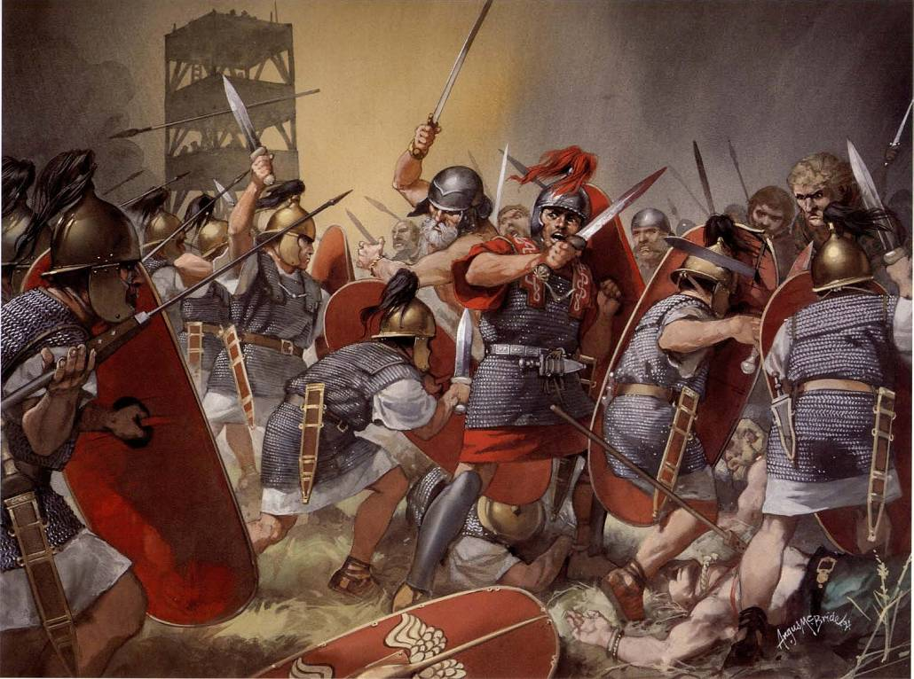

Hobbies
Japanese Anime
Japanese Anime is more dramatic and more contagius than film and TV series, in my personal view. There are some difference in form of art between east and west, Japanese Anime is good at expressing exquisite emotion of roles. Here I list my several favorite works. You can click directly to see the introduction of Wikipedia.
Ancient History
My interest for history are mainly focused on three regions. First,the empire of Rome for its all period, but most familiar with the period that the Republic ends and the Imperator appears. Gaius Julius Caesar and his son Augustus created a new country. Second, the expansion of Arabia. Arabian has bulid a power empire which threats the whole west. Their rise and fall is worth for us to think. Last, the sixteen-th century of Japan. Oda Nobunaga, the man who unitied japan, is admired by me.

Electronic game
There are only several games I have interest in, a list will follow.
- Pro Evolution Soccer
- Mount & Blade
- Rome: Total War
- Nobunaga no Yabou